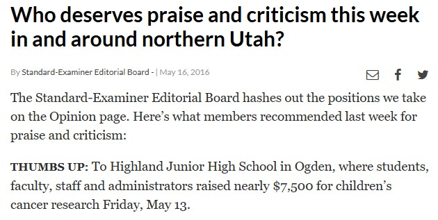
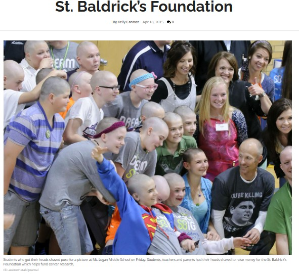
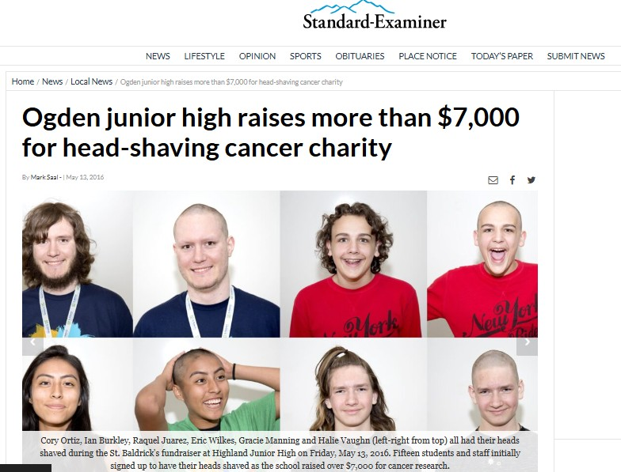
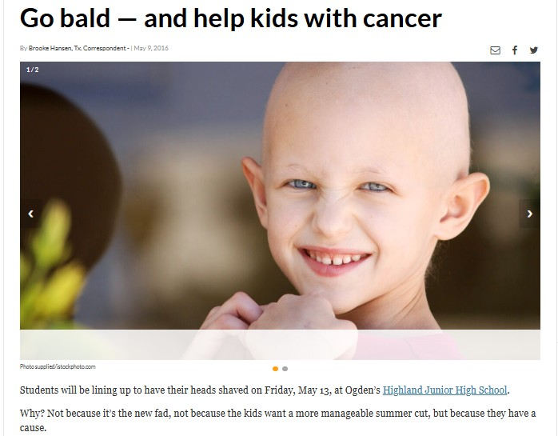

Building Community Through Service, Leadership & Youth Empowerment
For over a decade, I have organized student-led charity events, supported national fundraising efforts, and collaborated with schools and nonprofits to make measurable impact.
Media Features

Who deserves praise and criticism this week in and around
northern Utah?
Standard-Examiner Editorial Board — May 16, 2016
“First-year engineering teacher Cory Ortiz, who organized the
event, said he was overwhelmed by the students’ selflessness.
‘This is a high-poverty school,’ said Ortiz, a veteran of many
St. Baldrick’s Day shearings.”
My role: Event organizer, faculty lead.
Impact: Coordinated students & staff to raise
funds and public awareness for pediatric cancer research.
Read full article

Students shave their heads to raise money for St. Baldrick’s
Foundation
Herald Journal — Apr 18, 2015
“The charity was brought about by student teacher Cory Ortiz who
first shaved his head for St. Baldrick’s when he was in junior
high… ‘Service has always been important to me…’”
My role: Organizer & student-teacher lead.
Impact: $6,000+ raised; major student
participation and community engagement.
Read full article

Ogden junior high raises more than $7,000 for head-shaving
cancer charity
Mark Saal — May 13, 2016
“Organized by first-year engineering teacher Cory Ortiz, the
event is part of a national movement that raises money to fight
childhood cancers… Ortiz says he’s been blown away by the
generosity of these young people.”
My role: Primary organizer and liaison with
school administrators. Impact: $7,442 raised;
widespread student involvement and follow-up donations during
assembly.
Read full article

Go bald — and help kids with cancer
Brooke Hansen — May 9, 2016
“‘My favorite part about St. Baldrick’s,’ Ortiz says, ‘is being
able to honor all of the people who have been affected by cancer
by shaving in solidarity.’”
My role: Community outreach and event
promotion. Impact: Helped the school exceed its
fundraising goal and increase public awareness.
Read full article
- Total raised: $46,661 across all events
-
Roles: Event organizer, lead volunteer, mentor,
shavee
-
Organizations supported: St. Baldrick's
Foundation, local schools, the National Ability Center, community
centers
Year-by-Year Contribution Record
| Year |
Amount |
Event Location |
Role |
| 2024 |
$1,502 |
Virtual |
Shavee |
| 2022 |
$806 |
Virtual |
Shavee |
| 2021 |
$17,377 |
National Ability Center, Park City, UT |
Lead Organizer |
| 2020 |
$918 |
McMullan's Irish Pub, Las Vegas, NV |
Shavee |
| 2019 |
$635 |
Copper Hills High School, West Jordan, UT |
Lead Organizer |
| 2018 |
$610 |
Virtual |
Shavee |
| 2017 |
$2,403 |
Highland Jr. High School, Ogden, UT |
Lead Organizer |
| 2016 |
$7,512 |
Highland Jr. High School, Ogden, UT |
Lead Organizer |
| 2015 |
$8,112 |
Mount Logan Middle School, Logan, UT |
Lead Organizer |
| 2014 |
$1,838 |
Smithfield Recreation Center |
Lead Organizer |
| 2012 |
$4,650 |
Salt Lake Community College |
Lead Organizer |
What this taught me
Organizing these events required: logistics planning, stakeholder
coordination (administration, parents, students), volunteer
management, fundraising strategy, risk & permissions handling, and
media outreach. I apply the same structured approach and
human-centered leadership to consulting projects in education,
nonprofit strategy, and community programs.
If you’re interested in support with program design,
community-engaged initiatives, or team-driven volunteer campaigns,
let’s talk.